Gambar 1. Peta wilayah kajian
Padanan Gambar 2 jurnal (peta wilayah kajian Irbid)
Tampilan daratan Madura
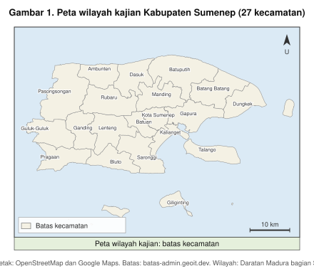
Tampilan seluruh kabupaten
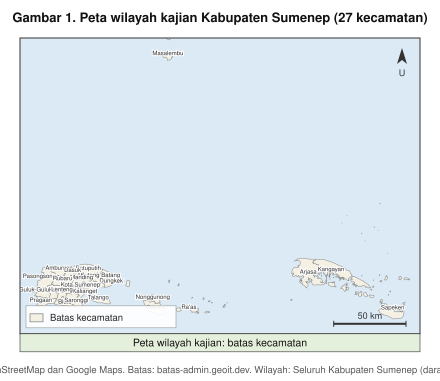
Gambar 2. Sebaran puskesmas dan rumah sakit
Padanan Gambar 4 jurnal (sebaran pusat kesehatan dan rumah sakit)
Tampilan daratan Madura
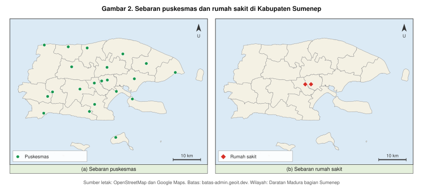
Tampilan seluruh kabupaten
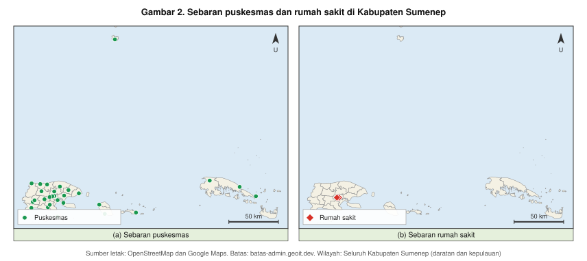
Gambar 3. Proses buffer puskesmas: sebelum, tengah, dan selesai
Padanan Gambar 6 jurnal (zona buffer pusat kesehatan)
Tampilan daratan Madura
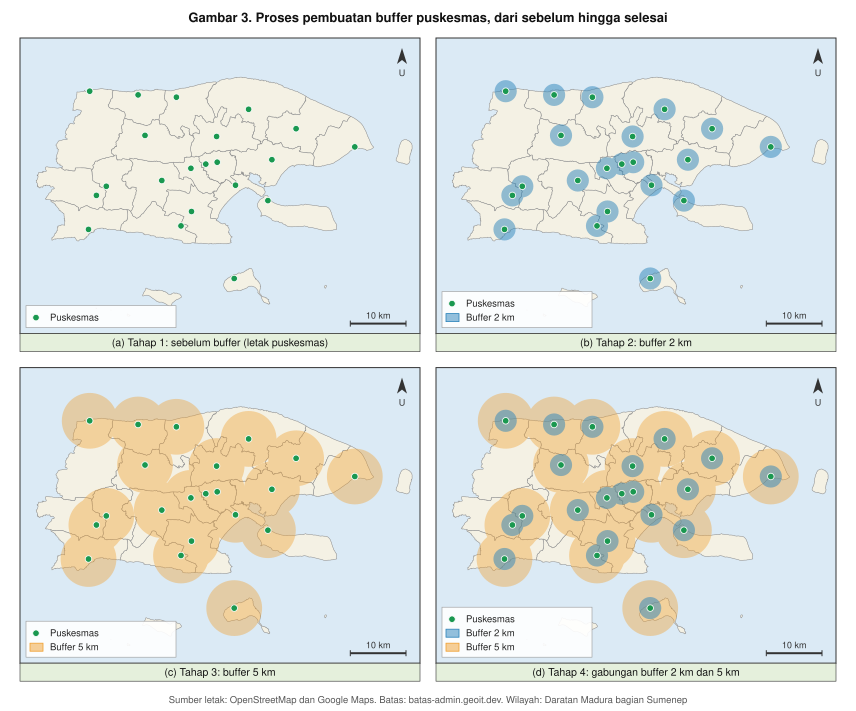
Tampilan seluruh kabupaten
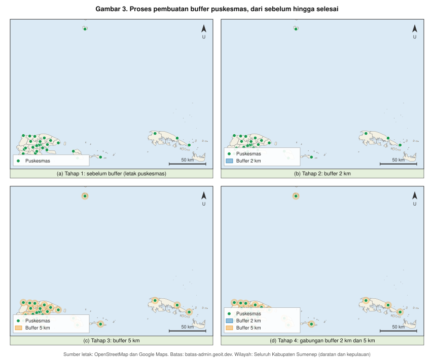
Gambar 4. Buffer rumah sakit
Padanan Gambar 7 jurnal (buffer rumah sakit 20 km)
Tampilan daratan Madura
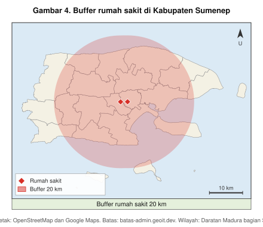
Tampilan seluruh kabupaten
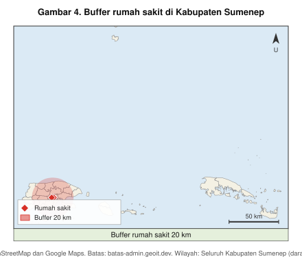
Gambar 5. Wilayah layanan (pendekatan)
Padanan Gambar 8 jurnal (service area)
Tampilan daratan Madura
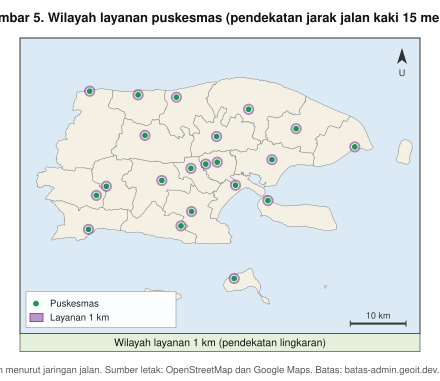
Tampilan seluruh kabupaten
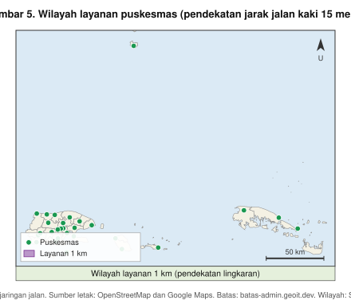
Gambar 6. Grafik persentase wilayah terjangkau
Padanan grafik pada Gambar 6 jurnal
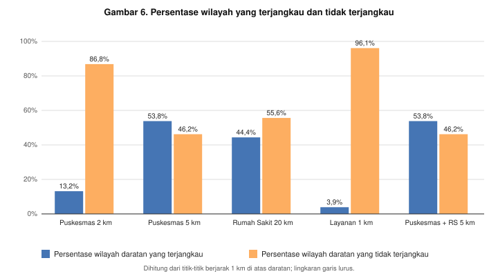
Gambar 7. Hasil tetangga terdekat
Padanan Gambar 5 jurnal (nilai NNR)
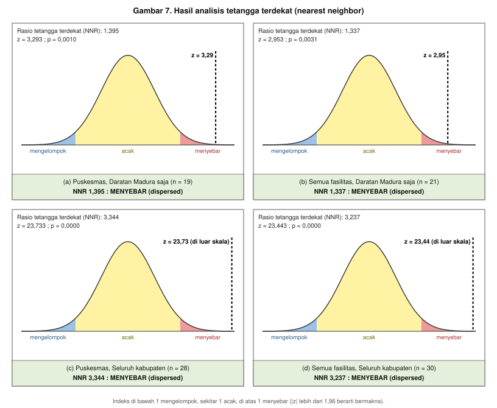